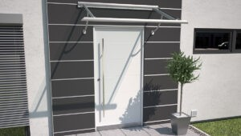
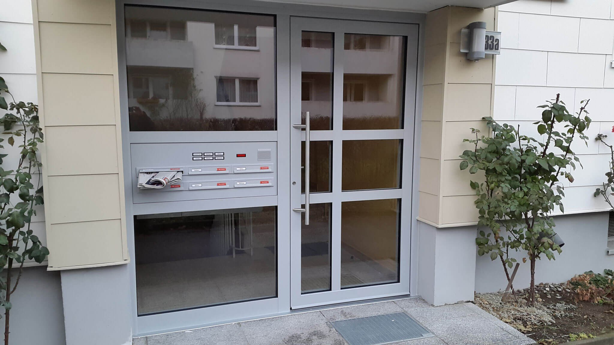
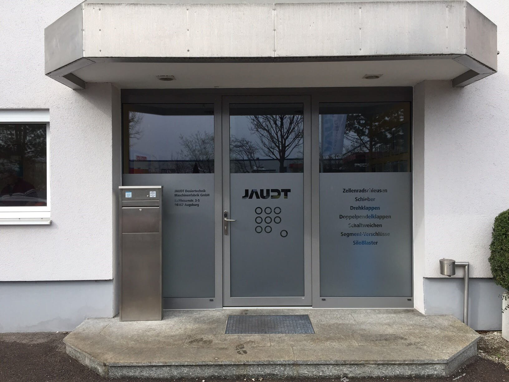
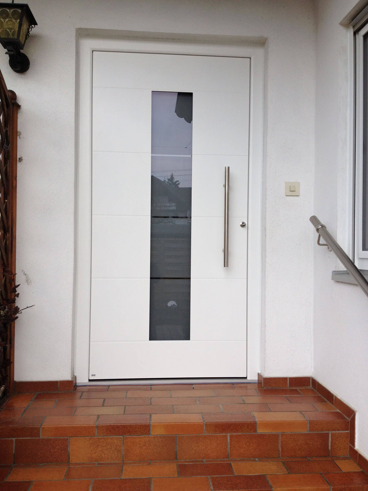
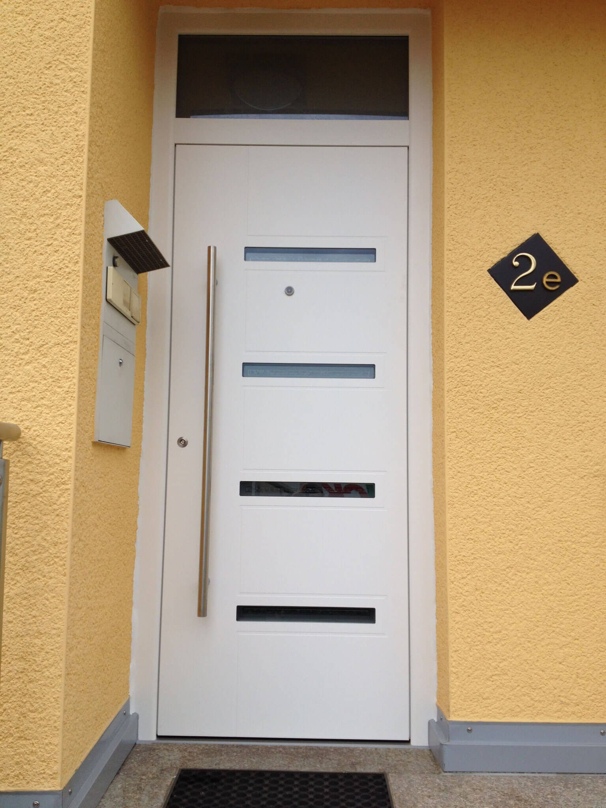
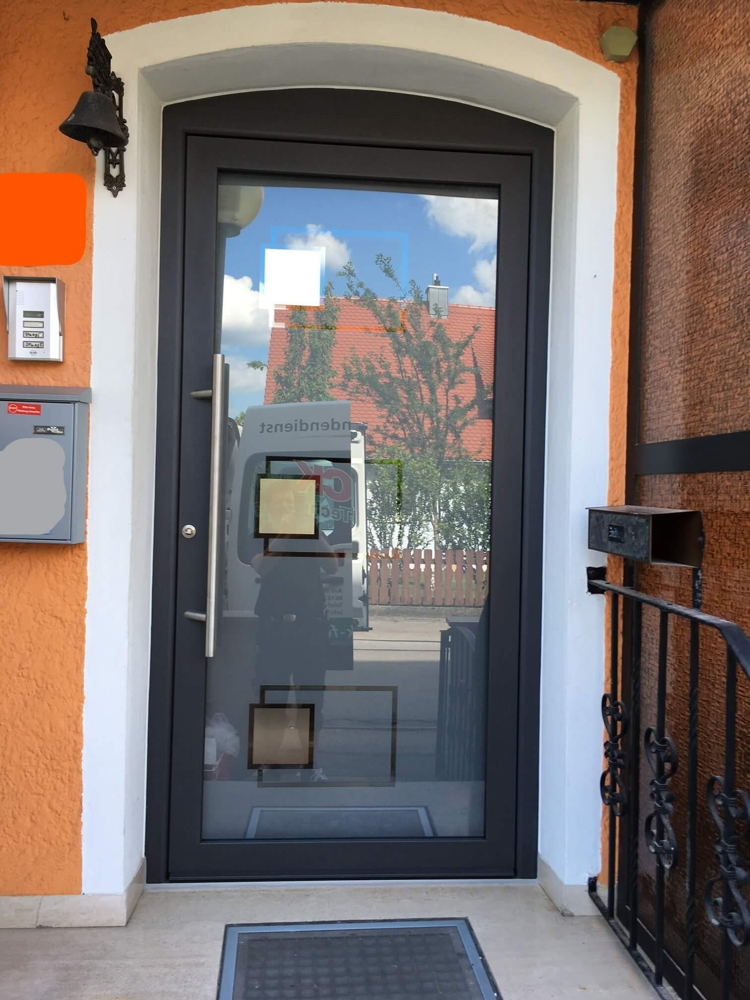
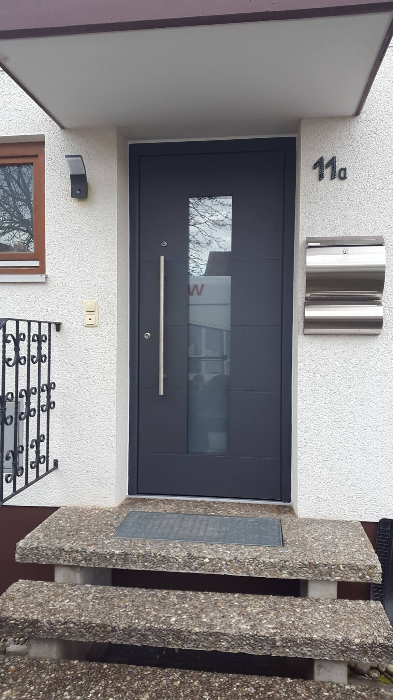
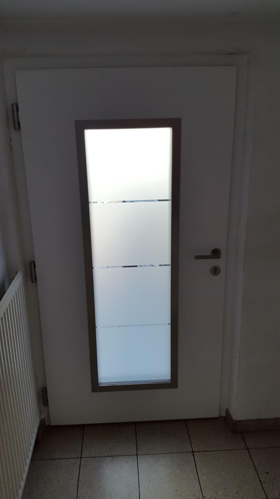
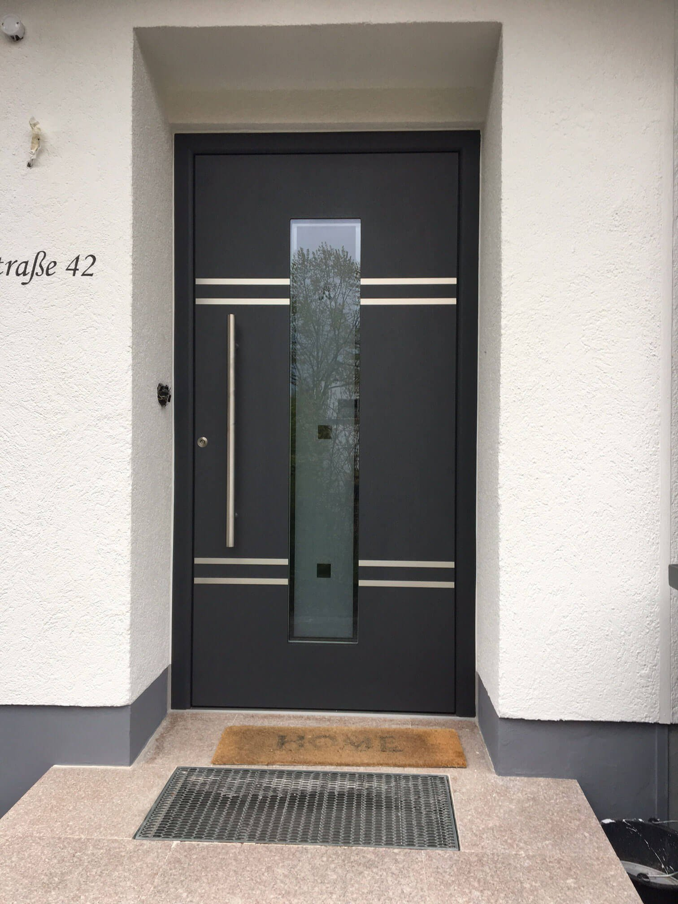
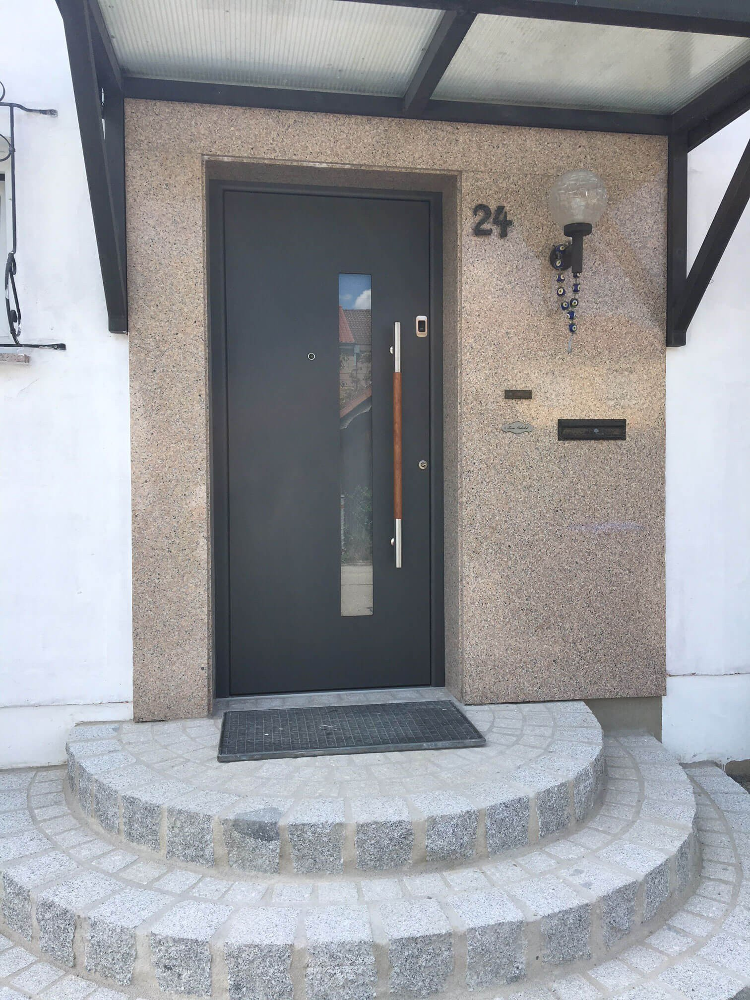

Eine kleine Auswahl aus über 60 Jahren Handwerk. Jedes Projekt erzählt eine Geschichte: vorher unauffällig, nachher das Gesicht eines Hauses.
 Haustür · Holzdekor
Haustür · Holzdekor

Haustür
Haustür · Modern
Gewerbe
Haustür · MFH
Haustür
Haustür · Modern
Haustür · Innen
Haustür
Haustür · Holzgriff
Haustür · MFH Fenster
Fenster
 Wintergarten
Wintergarten
Meine Familie ist nun schon mehr als 30 Jahre Kunde bei der Firma Zwick. Bei allen Anliegen wurde uns stets schnell, kompetent und freundlich geholfen.
Sehr freundliches, professionelles Unternehmen. Beratung, Termin und Montage — alles wie versprochen. Absolute Empfehlung!
Schnelle Reaktion, exzellente Beratung im Musterraum und saubere Montage. Genau so stellt man sich Handwerk vor.
Wir haben Fenster, Haustür und später noch den Wintergarten machen lassen. Immer derselbe Ansprechpartner — das schätzen wir sehr.